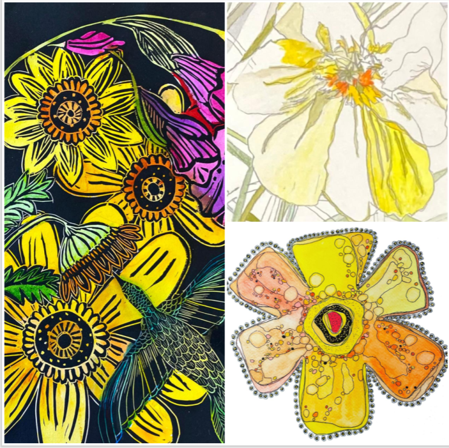

A SPRING TRIPLET: A Fine Art Celebration of Renewal, Color, and Nature
Celebrate the beauty of the season at A Spring Triplet, a colorful group exhibition featuring Juli Janovicz, Samira Gdisis, and Kendra Kett during May & June.
Through watercolor, printmaking, and mixed media, the artists explore florals, movement, and renewal in over 40 vibrant works.
On view May 1–June 26 at the North Shore Senior Center in Northfield.
Hours: Mondays-Fridays 9am-5pm.
Closed Memorial Day & Juneteenth.
All are welcome and admission & parking are free.